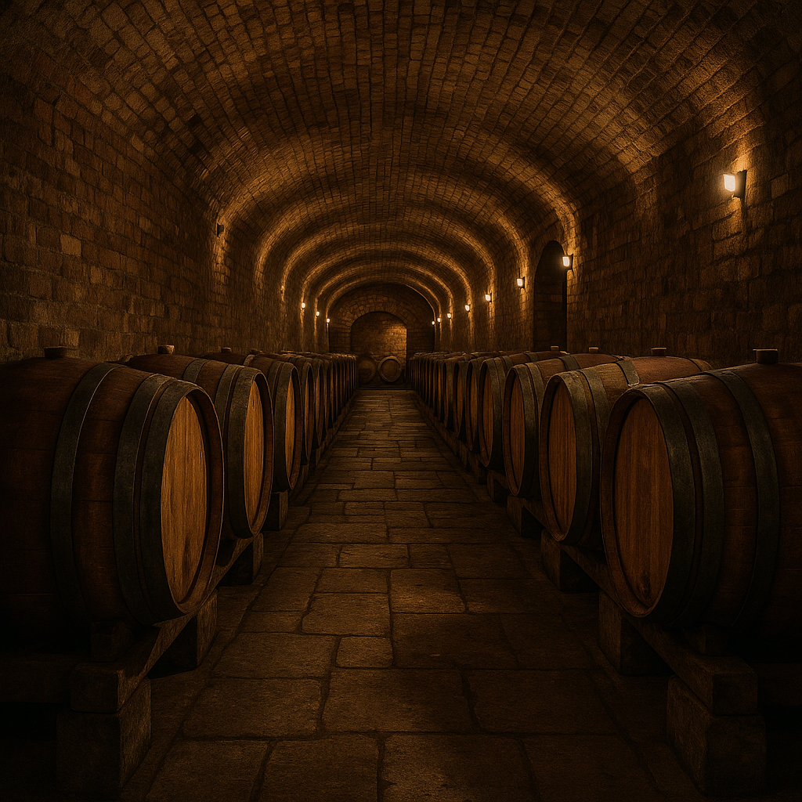
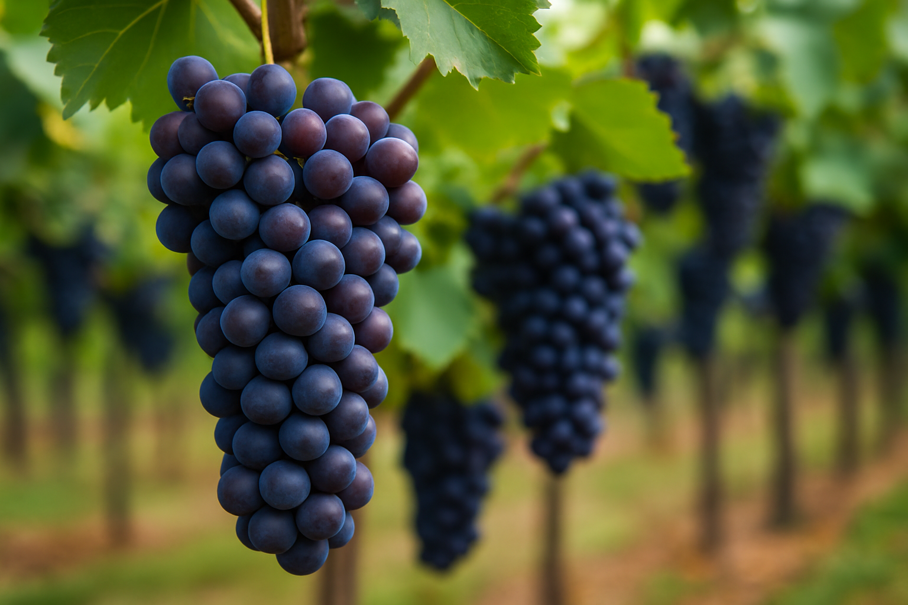
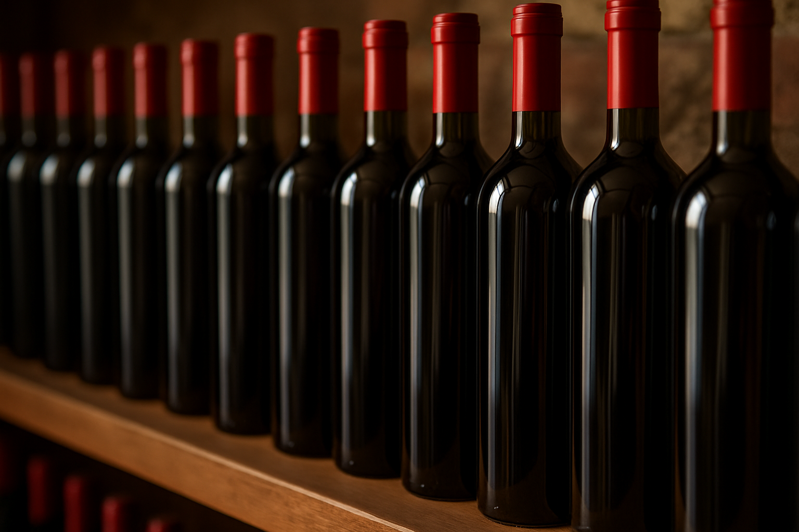

Vino Italiano
A tradição do vinho na Itália através dos séculos.
Quero conhecerHistória do Vinho na Itália
A Itália é um dos berços mais importantes da viticultura mundial. Desde a época do Império Romano, o vinho já era parte essencial da cultura, difundido por toda a Europa com técnicas de cultivo e armazenamento.
Atualmente, o país é o maior produtor global de vinho, com regiões famosas como Toscana, Piemonte e Vêneto. Cada vinho carrega não apenas sabor, mas também história, tradição e identidade cultural.
Galeria

